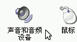
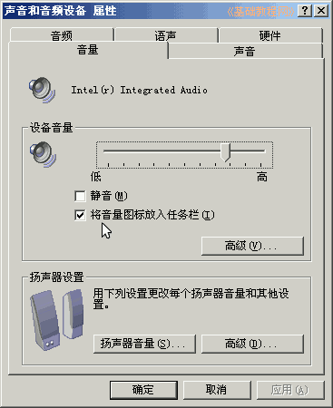
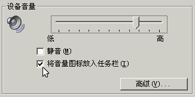
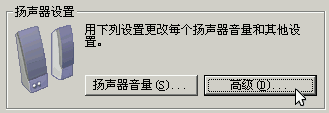
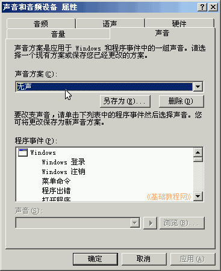
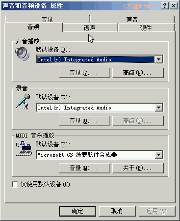

控制面板基础教程
作者：TeliuTe 来源：基础教程网
声音和音频设备选项，可以调解音量，系统是否发声，查看声音硬件等，下面我们来看一个练习；
1、声音和音频设备
1）进入经典视图，点“声音和音频设备”图标出来一个面板；

2）里面包括音量、声音、音频、语声、硬件等，点击一个标签，这一排标签就会都下来；

2、设置选项
1）音量标签中，可以选择是否在任务栏托盘里，显示一个小喇叭图标，点高级可以设定各个音量；

2）在下边的扬声器设置中，点“高级”可以选择音箱的类型，比如2.1或5.1等；

3）在“声音”标签里，可以设定系统无声，也就是操作的时候电脑不会发出声响；

4）上面的一排标签，音频、语声、硬件，点进去看看即可，一般不用设置；

本节学习了声音和音频设备的基础知识，如果你成功地完成了练习，请继续学习下一课内容；
本教程由86团学校TeliuTe制作|著作权所有
基础教程网：http://teliute.org/
美丽的校园……
转载和引用本站内容，请保留作者和本站链接。